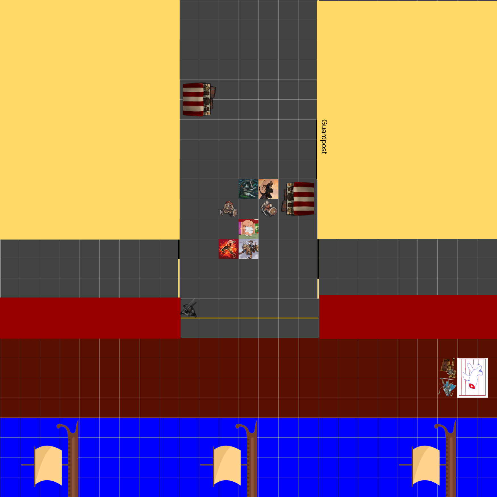
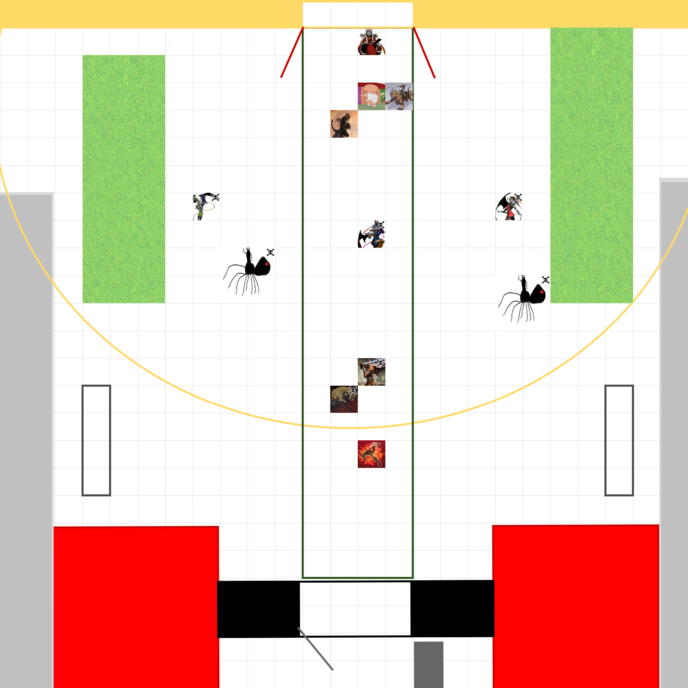
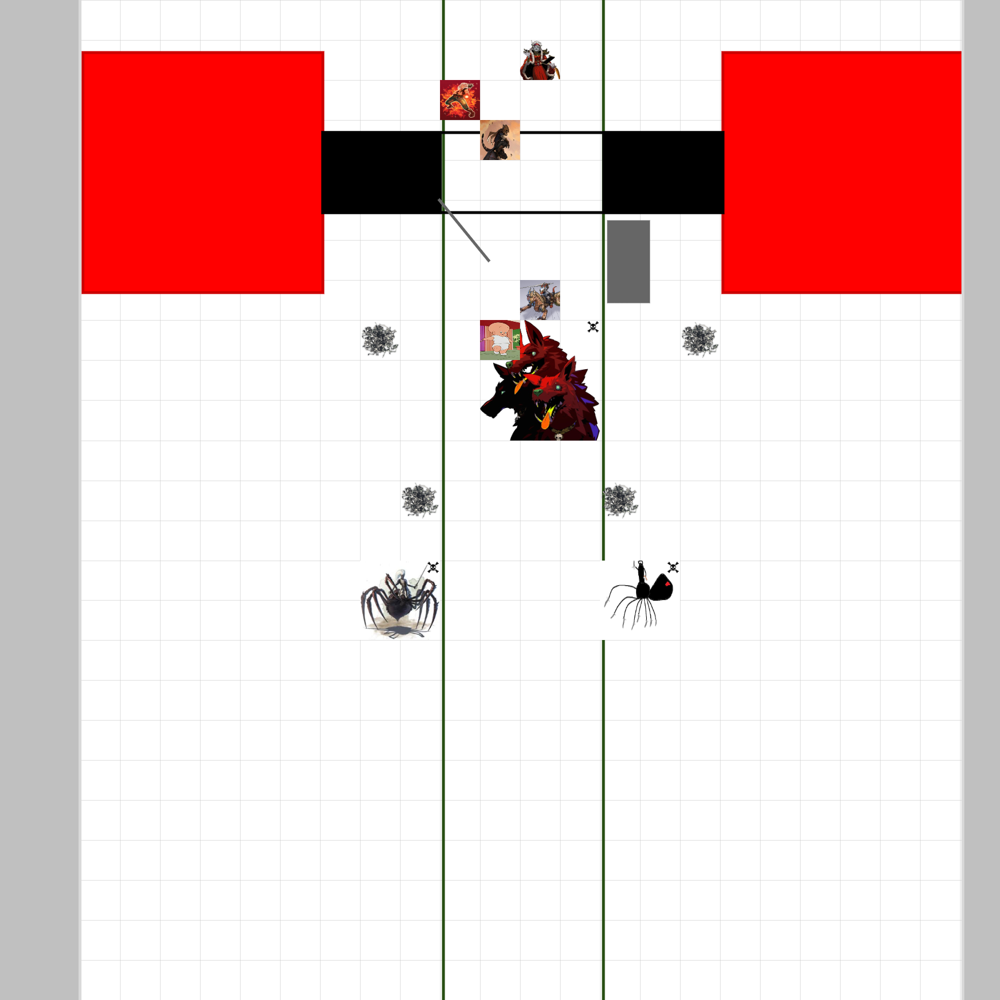
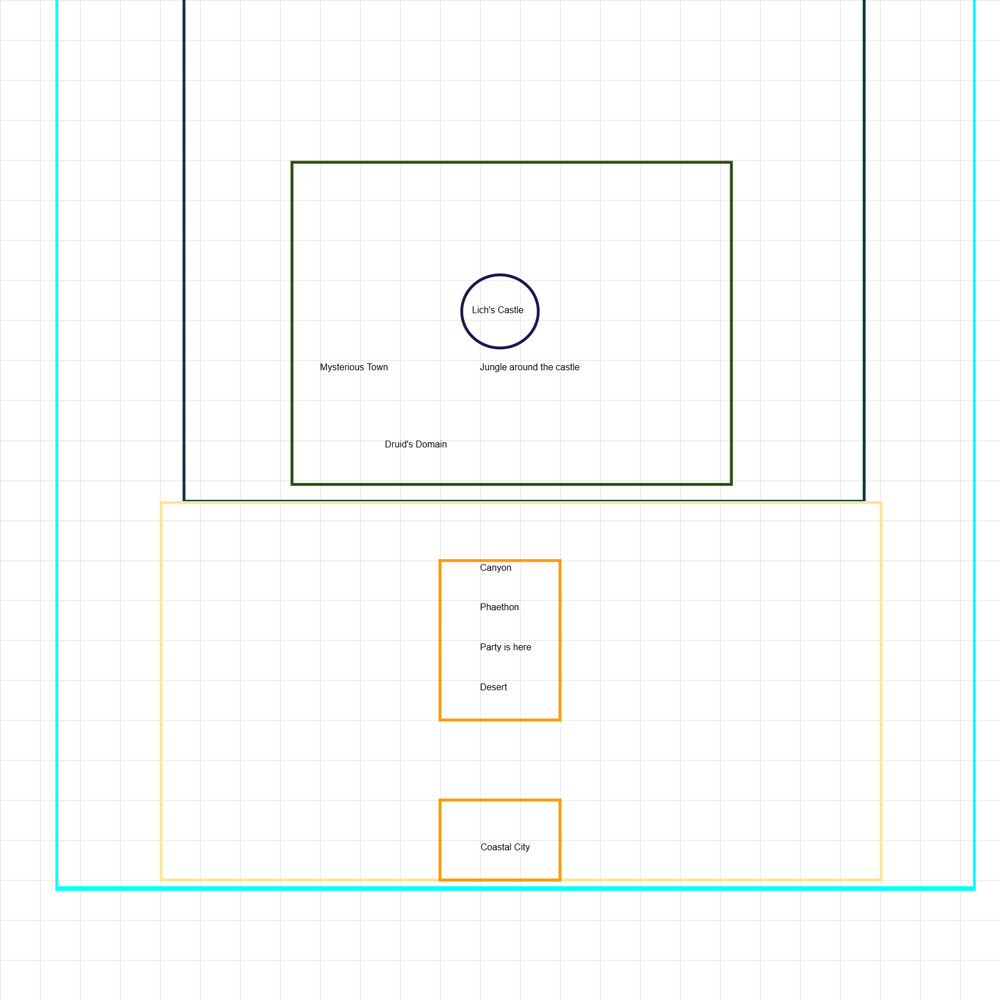
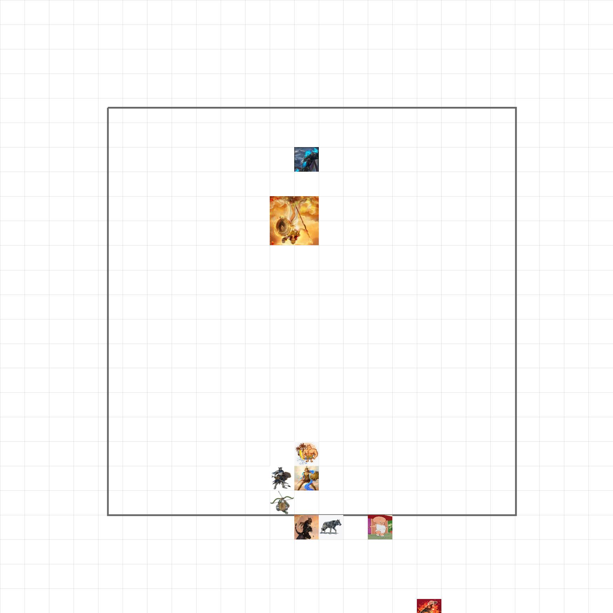
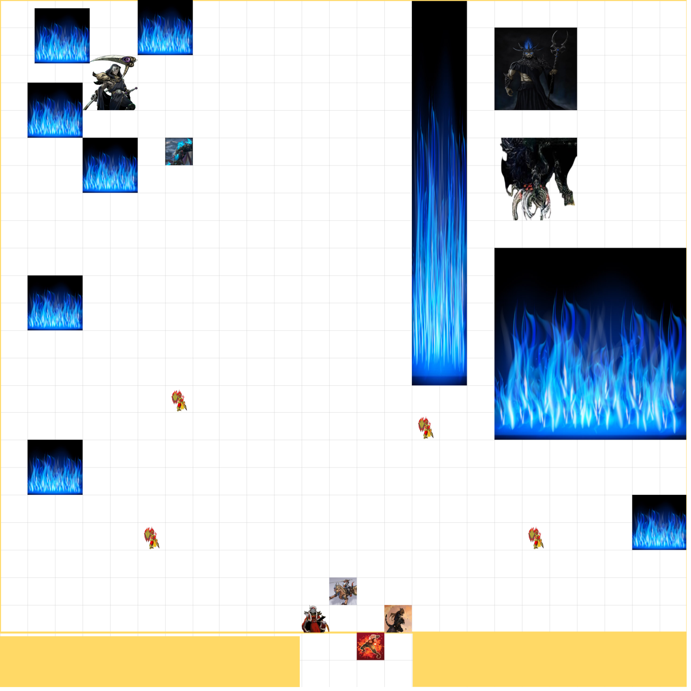

The Grecian Realms Wiki
🔍
About
Maps
Codex
Contribute
Donations
Maps from the Campaign
Explore some of the setpieces from the campaign!

Docks of Mycenae

Garden of Persephone

Hades Palace Gates

Map of the Lich's domain

Statue of Athena

Throne of Hades
❮
❯